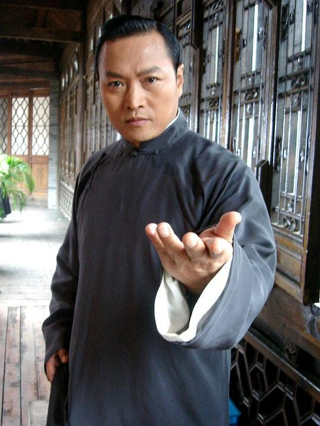

三国 · 人物与地图
融合两部作品：动画电影《三国的星空第一部》（讨董→官渡，曹操视角）与 电视剧《大军师司马懿》（军师联盟 / 虎啸龙吟）。 每个角色标注历史画像、电影配音演员与电视剧演员；单渠道出现的人物另一栏留空。
人物
左列为人物历史画像，右下列出电影/电视剧两渠道扮演者。照片为演员本人公开照。

曹操
Cáo Cāo
字孟德
Cáo Cāo
 檀健次电影配音
檀健次电影配音 于和伟电视剧演员
于和伟电视剧演员
荀彧
Xún Yù
彧 yù
Xún Yù
—电影配音
 王劲松电视剧演员
王劲松电视剧演员
夏侯惇
Xiàhóu Dūn
惇 dūn
Xiàhóu Dūn
—电影配音
 杨涵斌电视剧演员
杨涵斌电视剧演员
曹洪
Cáo Hóng
字子廉
Cáo Hóng
—电影配音

陈之辉电视剧演员无画像
张郃
Zhāng Hé
郃 hé
Zhāng Hé
—电影配音
郭家诺电视剧演员

汉献帝 · 刘协
Liú Xié
末代天子
Liú Xié
—电影配音
—电视剧演员

董承
Dǒng Chéng
Dǒng Chéng
—电影配音
 赵彦民电视剧演员
赵彦民电视剧演员
许褚
Xǔ Chǔ
褚 chǔ
Xǔ Chǔ
—电影配音
—电视剧演员

郭嘉
Guō Jiā
字奉孝
Guō Jiā
—电影配音
 曹磊电视剧演员
曹磊电视剧演员
袁绍
Yuán Shào
字本初
Yuán Shào
 路金波电影配音
路金波电影配音—电视剧演员
无画像
许攸
Xǔ Yōu
攸 yōu
Xǔ Yōu
—电影配音
—电视剧演员
无画像
麦子
Mài zi
曹操的狗
Mài zi
—电影配音
—电视剧演员
无画像
渠穆
Qú Mù
渠 qú
Qú Mù
—电影配音
—电视剧演员
无画像
师父
Shīfu
易中天客串
Shīfu
 易中天电影配音
易中天电影配音—电视剧演员
无画像
童子
Tóngzǐ
Tóngzǐ
—电影配音
—电视剧演员

司马懿
Sīmǎ Yì
懿 yì
Sīmǎ Yì
—电影配音
 吴秀波电视剧演员
吴秀波电视剧演员无画像
张春华
Zhāng Chūnhuá
Zhāng Chūnhuá
—电影配音
 刘涛电视剧演员
刘涛电视剧演员
曹丕
Cáo Pī
字子桓
Cáo Pī
—电影配音
 李晨电视剧演员
李晨电视剧演员无画像
柏灵筠
Bǎi Língyún
柏 bǎi
Bǎi Língyún
—电影配音
 张钧甯电视剧演员
张钧甯电视剧演员无画像
郭照
Guō Zhào
Guō Zhào
—电影配音
 唐艺昕电视剧演员
唐艺昕电视剧演员
杨修
Yáng Xiū
字德祖
Yáng Xiū
—电影配音
 翟天临电视剧演员
翟天临电视剧演员
甄宓
Zhēn Fú
宓 fú
Zhēn Fú
—电影配音
—电视剧演员

曹植
Cáo Zhí
字子建
Cáo Zhí
—电影配音
 王仁君电视剧演员
王仁君电视剧演员
曹叡
Cáo Ruì
叡 ruì
Cáo Ruì
—电影配音
 刘欢电视剧演员
刘欢电视剧演员
诸葛亮
Zhūgě Liàng
字孔明
Zhūgě Liàng
—电影配音
—电视剧演员

曹真
Cáo Zhēn
字子丹
Cáo Zhēn
—电影配音
 章贺电视剧演员
章贺电视剧演员无画像
曹休
Cáo Xiū
字文烈
Cáo Xiū
—电影配音
—电视剧演员

曹爽
Cáo Shuǎng
字昭伯
Cáo Shuǎng
—电影配音
—电视剧演员
无画像
司马师
Sīmǎ Shī
字子元
Sīmǎ Shī
—电影配音
—电视剧演员

司马昭
Sīmǎ Zhāo
字子上
Sīmǎ Zhāo
—电影配音
檀健次电视剧演员无画像
司马孚
Sīmǎ Fú
字叔达
Sīmǎ Fú
—电影配音
 王东电视剧演员
王东电视剧演员无画像
侯吉
Hóu Jí
虚构角色
Hóu Jí
—电影配音
—电视剧演员
地点舆图
方位示意，非精确测绘。黄线＝行军/北伐路线，红点＝战役地点，绿块＝势力中心。
行军/北伐路线
战役地点
势力中心
古今地点对照
| 古地名 | 今地名 | 相关 |
|---|---|---|
| 许都（Xǔ Dū） | 河南许昌 | 曹操迎汉献帝定都，"挟天子以令诸侯" |
| 洛阳（Luò Yáng） | 河南洛阳 | 东汉旧都；曹丕称帝后的魏都 |
| 邺城（Yè Chéng） | 河北临漳西南 | 曹操霸府，铜雀台所在 |
| 长安（Cháng'ān） | 陕西西安 | 董卓西迁；关中重镇 |
| 官渡（Guān Dù） | 河南中牟东北 | 官渡之战，曹操以少胜多 |
| 乌巢（Wū Cháo） | 河南延津东南 | 夜袭火烧袁绍粮仓 |
| 赤壁（Chì Bì） | 湖北赤壁 | 孙刘联军火攻大败曹操 |
| 汉中（Hàn Zhōng） | 陕西汉中 | 蜀汉北伐大本营 |
| 祁山（Qí Shān） | 甘肃礼县一带 | 诸葛亮六出祁山北伐 |
| 街亭（Jiē Tíng） | 甘肃秦安东北 | 马谡失守，北伐失利 |
| 五丈原（Wǔzhàng Yuán） | 陕西岐山南 | 诸葛亮病逝 |
| 陈仓（Chén Cāng） | 陕西宝鸡 | 郝昭坚守不下 |
历史画像来源：维基百科/维基共享资源（多为明清刻本画像）· 演员照片为演员本人公开照 · 地点为方位示意 · 生僻字已注音 · 人物资料据豆瓣/百度百科